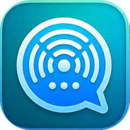

Masr Drive — مصر درايف
لعبة سواقة ثلاثية الأبعاد في شوارع مصر: مهام وتاكسي وسباقات، وعربيات تشتريها وتطوّرها، وراديو بأغاني مصرية. بتشتغل من المتصفح مباشرة.
ثبّتها كتطبيق
- افتح اللعبة في Chrome.
- اضغط على النقط التلاتة.
- اختار «تثبيت التطبيق» أو «إضافة إلى الشاشة الرئيسية».

شات بلا نت
محادثة زي واتساب من غير إنترنت: رسايل وصور وصوت ومجموعات، عن طريق الهوت سبوت بين الموبايلات. تطبيق أندرويد.
طريقة الاستخدام والتثبيت
- بعد التحميل افتح الملف واسمح بالتثبيت من مصدر غير معروف.
- جهاز واحد يفتح الهوت سبوت ويدوس «أنا اللي فاتح النقطة».
- باقي الأجهزة تتوصل بالنقطة وتدوس «أنا المتصل بالنقطة».
✨
قريباً
ألعاب وتطبيقات جديدة هتتضاف هنا.